Riot
Riot on muutakin kuin videoneuvotteluratkaisu - se on erinomainen työkalu ryhmätyöskentelyyn. Voit käyttää Riot-sovellusta selaimessa tai sovelluksella, joka toimii MacOS-, Windows- ja Linux-työasemilla sekä iOS- ja Android-laitteilla.
Asennus
Asentaminen tehdään käyttöjärjestelmän komentokehotteella eli avaalla Terminal. Asentamista varten sinun on kirjauduttava joko pääkäyttäjän tunnuksella (root) tai tavallisena käyttäjänä käyttää järjestelmänvalvojan oikeuksia (sudo-komentoa).

Komennolla sudo su - vaihdettu pääkäyttäjään. avaa Terminal -> vaihda root käyttäjään sudo su - komennolla tai käytä sudoa komennoissa.
Suositeltua on käyttää palomuuria ja tällöin seuraavat palomuurin portit täytyy olla avoimena tulevalle liikenteelle.
- 80 TCP (HTTP)
- 443 TCP (HTTPS)
- 10000 - 20000 UTP
Voit tarkistaa palomuurin säännöt iptables -L -n -komennolla ja asettaa säännöt esimerkiksi ufw -palomuuriohjelmalle allow in-komennolla alla näkyvän kuvan mukaisesti.


Käytetään pakettien hallinnassa APT-työkalua. APT transport sallii sellaisten arkistojen käytön, joihin pääsee HTTP Secure -protokollan kautta (HTTPS).
Syötä alkuun komento: apt install -y lsb-release wget apt-transport-https
Ladataan asennusavain https://packages.riot.im/debian/riot-im-archive-keyring.gpg -osoitteesta komennolla sudo wget -O /usr/share/keyrings/riot-im-archive-keyring.gpg.
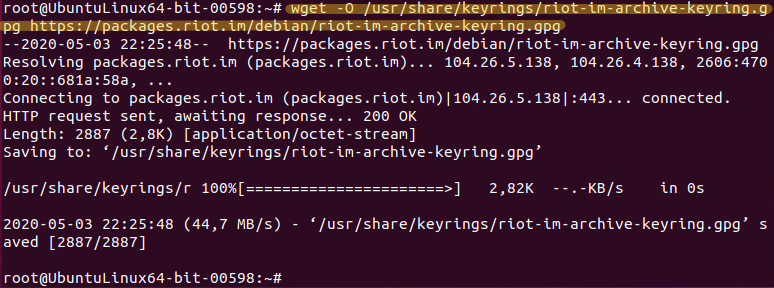Seuraavaksi lisätään pääsy Riotin pakettivarastoon komennolla.
echo "deb [signed-by=/usr/share/keyrings/riot-im-archive-keyring.gpg] https://packages.riot.im/debian/ $(lsb_release -cs) main" | tee /etc/apt/sources.list.d/riot-im.list
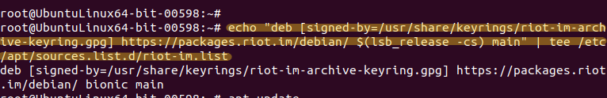Päivitetään pakettilistaus käyttöön komennolla apt update.
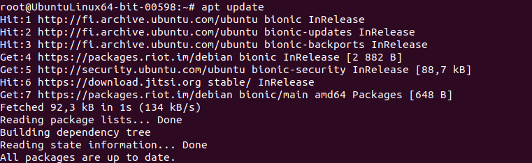Asennus tehdään komennolla apt install riot-web.
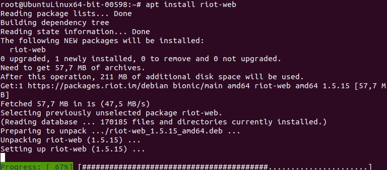Ohjelma vaatii käyttäjätunnuksen luomisen, mutta sähköpostiosoitteen lisääminen ei ole pakollista. Suotavaa se on toki tunnuksen ylläpitoa ajatellen. Keskusteluhuoneissa kirjautuneet käyttäjät voivat keskustella chatissa tai videopuheluita soittaen. Palvelua voi käyttää myös suomenkielellä.
Jitsiin verrattuna Riot:illa on loistava ominaisuus, jolla ohjelmassa voi ottaa käyttöön myös muita yhteistyöohjelmia - kuten IRC, Twitter, Telegram, SMS ja Gitter. Myös Jitsin voi asentaa lisäosaksi ja käyttää Riot ohjelmassa!
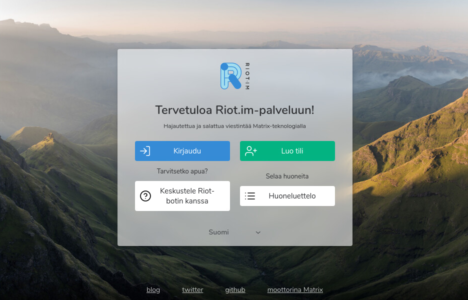 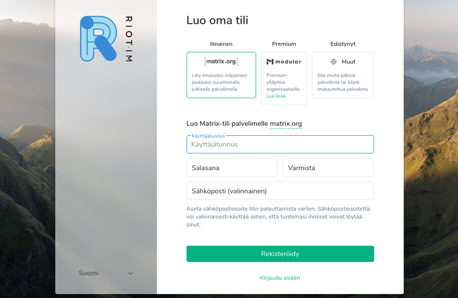 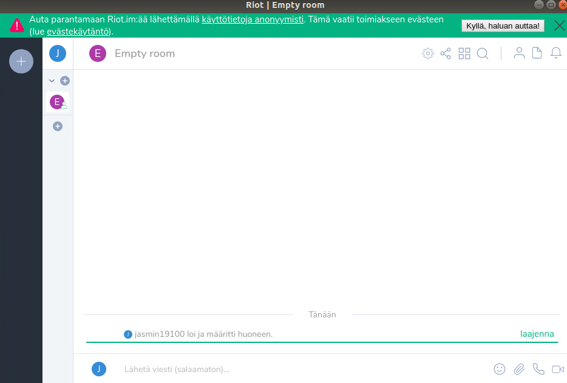 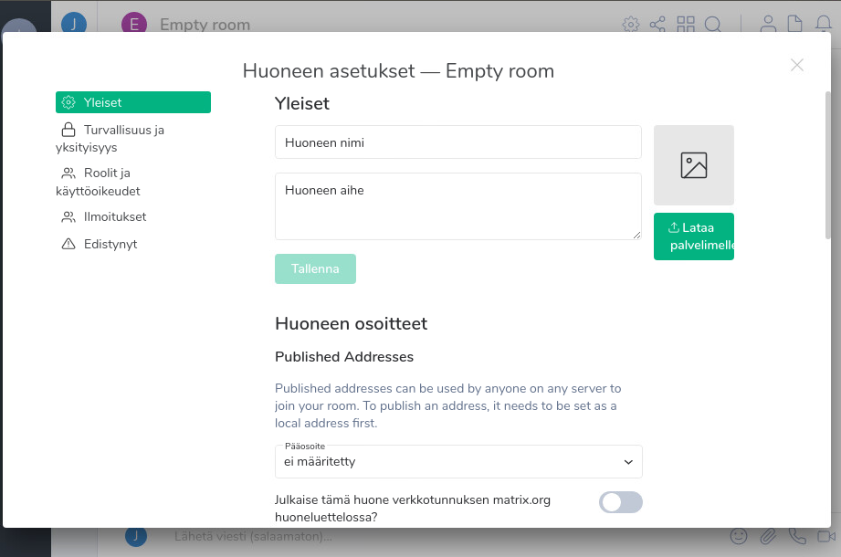 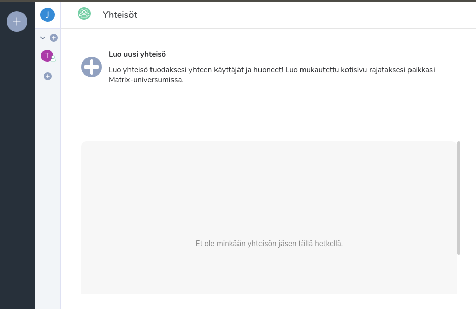 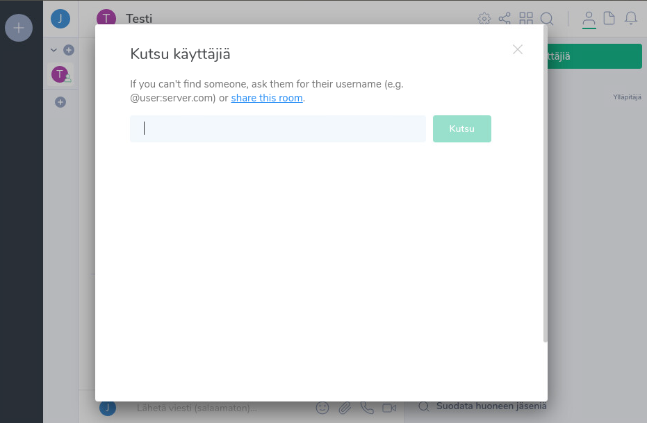 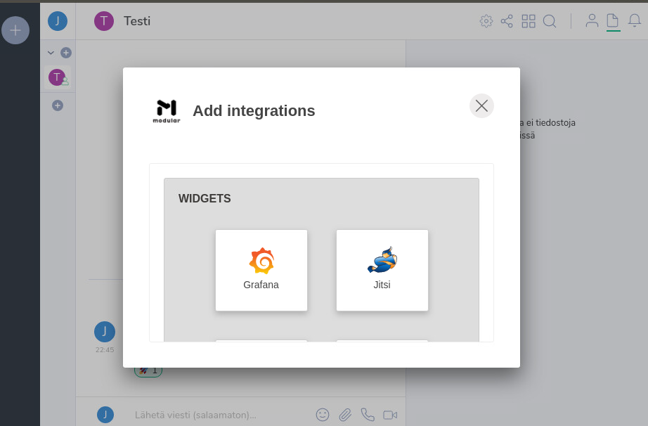 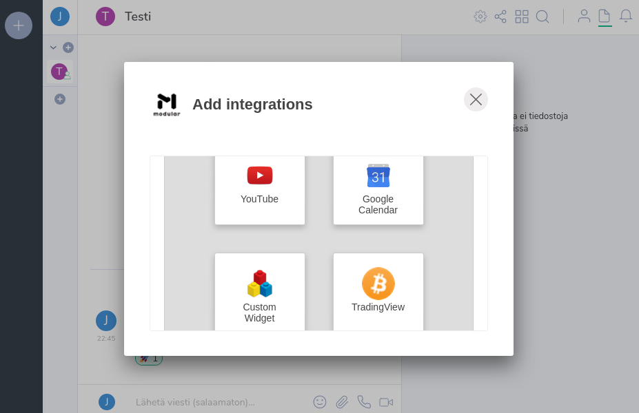 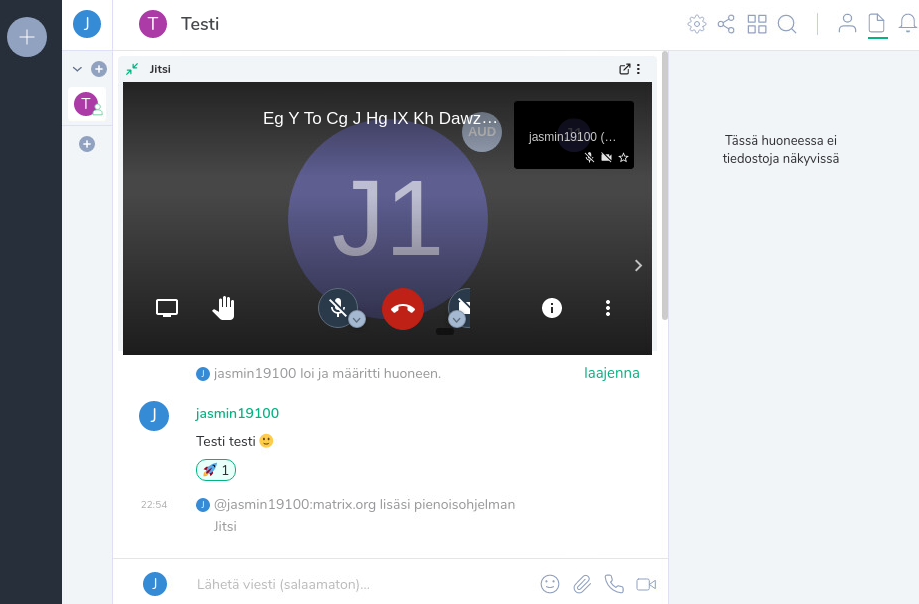